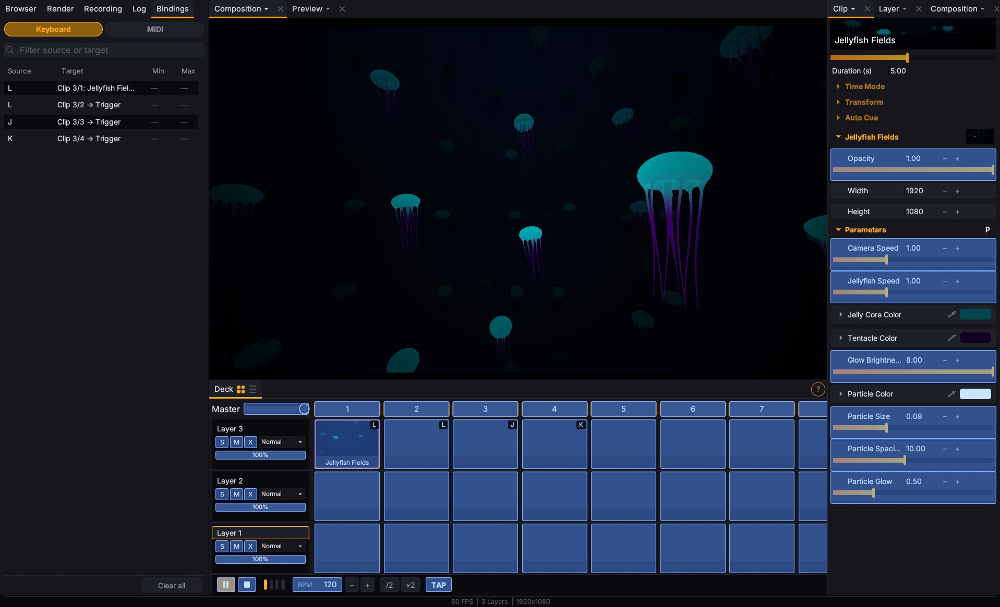
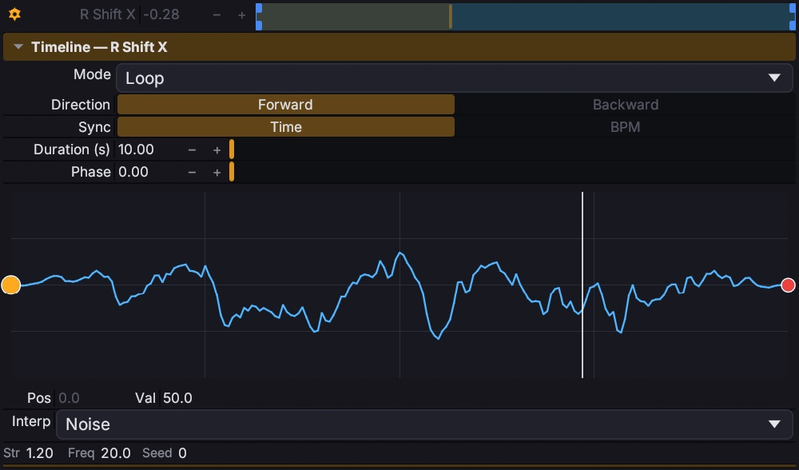
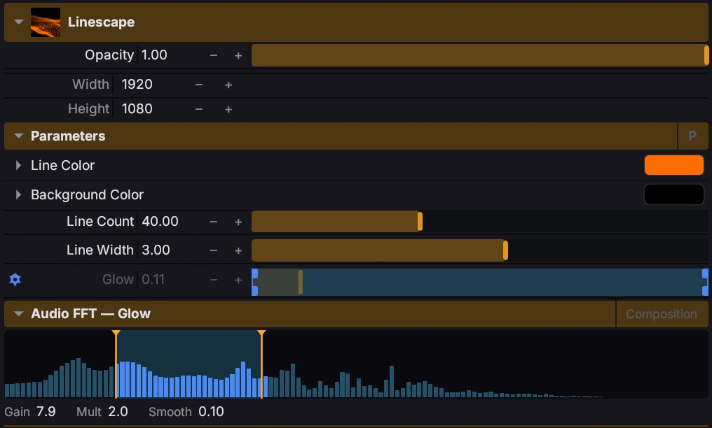
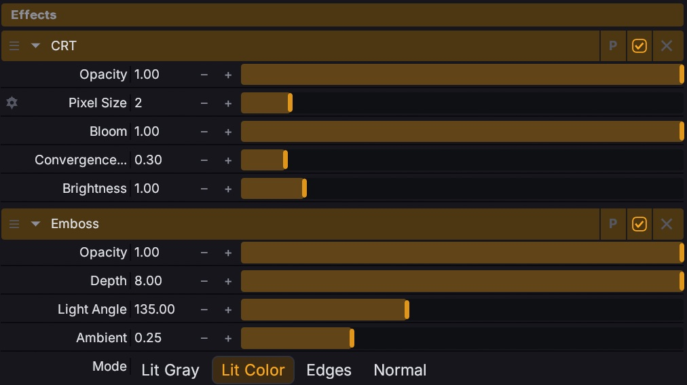
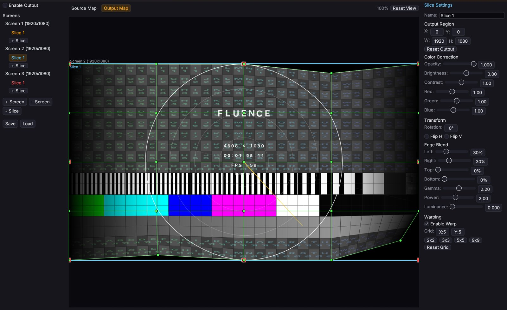

Everything you'd build a rig out of.
A complete tour of the Fluence feature set: composition, clip library, hardware control, animation, output, recording, and the workflow pieces that hold it all together.
Fifteen clip types.
From shaders and video to live capture and built-in generators. Mix any of them on any layer.
Shader
ISF, GLSL .fs, and Shadertoy .json with multi-pass support. Mesh shaders, full PBR, OBJ and GLTF model import. Drop a shader file in your folder, refresh the browser, done.
Text
Animated text rendered with signed distance fields, crisp at any resolution. Per-character animation of position, scale, rotation, color, opacity, glow, with stagger by characters, words, or lines.
Fractal
Deep-zoom Mandelbrot using arbitrary-precision math, far past standard floating-point limits. Ten formulas, six palettes, click-to-recenter, auto-zoom, auto-rotate.
Shape Shifter 3D
Real-time SDF modeling. Build scenes from primitives, boolean ops, modifiers, and deformations. The engine generates only the GLSL your scene actually uses, on the fly.
Video
mp4, mov, mkv, webm, avi, wmv, flv, m4v. Speed control, reverse, in/out trim. Loop, ping-pong, once-hold, or once-eject playback.
Audio
mp3, wav, flac, ogg, m4a, aac. Trigger from the deck or place on the arrangement timeline as a waveform. Routes to the master output.
Image
png, jpg, jpeg, gif, bmp. Treat stills like any other clip. Transform them, blend them, drive their parameters with audio or hardware.
Web
Live HTML rendered via an embedded browser. Any URL or local file:// path. Use it for web visualizations, live data, or anything HTML can do.
Spout
Receive video from any other Spout-enabled Windows app: game engines, VJ tools, generative software. Live texture sharing, no encoding overhead.
DeckLink
Pro video input via Blackmagic DeckLink capture cards. Detected devices show up in the Sources browser automatically.
Capture (DirectShow)
Webcams, USB capture cards, virtual cameras. Anything Windows sees as a DirectShow device works as a live source.
Screen
Capture a desktop, monitor, or single window via Windows.Graphics.Capture. Use any application's output as a clip.
Test Card
Built-in calibration patterns: SMPTE bars, gradients, geometry overlays, frequency tests, FPS counter, frame index. For dialing in displays and projector setups.
Router
Routes another layer's composited output back as input. Feedback effects, layer mixing, recursive composition.
Plugin
Third-party clips written in Python, Node, or any executable. Communicates with Fluence over a shared-memory protocol.
Bring your own 3D.
Load OBJ or GLTF models, lit with full PBR. Or write your own mesh shader with vertex and geometry stages for procedural 3D, lit the same way. Either path, the model is just another clip on the deck.
Drive every parameter, three ways.
Bindings for performance, timeline automation for shape, FFT for response.
Keyboard, MIDI, OSC. One mapping system.
Click Edit Keyboard, Edit MIDI, or Edit OSC. Every mappable widget paints an overlay. Click the control, press a key or move a knob, done. OSC works the other direction: addresses derive from the control hierarchy, ready for TouchOSC.
Each binding has min and max, so you can scale 0 to 1 input into any range. One source can fan out to many targets, so a single key can fire a whole scene. Bindings save with the project.

Animate any value over time.
Loop, bounce, random, or play-once-and-hold. Sync to seconds or to your composition's BPM. Phase-offset multiple parameters to stagger them. Draw custom envelope curves with per-point easing: linear, quad, sine, circular, or noise for organic randomness.

Drive parameters from any frequency band.
Pick a source: the room (composition output) or an external input. Set a frequency range. Tune gain, smoothing, multiplier, and output range. Reshape the response with an envelope curve. Every parameter that supports timeline automation also supports FFT.

Stack, group, blend, transition.
Build the look at four scopes: clip, layer, group, composition.
Effect chains, anywhere.
Drop effects on a single clip, on a whole layer, on a group, or across the entire composition. They run in order: clip, then layer, then group, then comp. Reorder with a drag, opacity-blend, enable/disable without removing, save preset chains.
Some effects are filters (input image required). Others are generators. Drop one on an empty slot and it becomes a clip that consumes the layers below as input.

Twenty-seven ways to mix.
From standard composite to creative keying. Pick how light, color, and detail combine on every layer or group, and switch modes mid-show.
Cut, fade, wipe, push.
Set per-layer transitions for clip switching: instant cuts, crossfades, four directions of wipe, four directions of push. Adjustable duration. On the arrangement timeline, overlapping two clips on a track creates a transition with the overlap duration.
Composite together, blend as one.
Group multiple layers and they composite together before blending with the rest. Groups have their own opacity, blend mode, and effect chain. Useful for treating a sub-mix as a unit.
From one screen to a whole rig.
Multi-display, projection mapping, edge blending, warping, Spout. All in one output engine.
Multi-display, with projection mapping.
Quick output: borderless fullscreen on any monitor, or a windowed output at composition resolution. Advanced output: multiple screens (each a monitor, Spout sender, or virtual destination) with slices mapping regions of the composition to regions of the screen.
Per-slice opacity, brightness, contrast, RGB, rotation, flip. Edge blending for overlapping projectors. Warping grids for non-flat surfaces.

Spout in. Spout out.
Send Fluence's output to any Spout-compatible Windows app, and pull other Spout sources back in as clips. Build cross-app rigs without ever encoding video.
Capture the live show. Render the prepared one.
Bar-aware start and stop triggers.
Record the composition output, or any specific layer. Start immediately, on the next clip trigger, on the next bar (BPM-synced), or after a delay. Stop manually, when all clips finish, after a number of seconds, or after a number of beats. Set it once before the show; let it run itself.
Twelve codecs, including HAP and DXV3.
FFmpeg-based: H.264, ProRes 422 / 422 HQ / 4444, PNG sequence. GPU-direct (no FFmpeg overhead): HAP, HAP Alpha, HAP Q, DXV3 in four flavors. Export single clips or full arrangements. Queue multiple jobs. FPS presets from 24 to 60.
The pieces that hold it together.
Modular dock
Drag any panel to reposition, split, or tab. Open multiple Viewports and Parameters panels. Layout saves with the project.
Theme system
Four presets: Midnight, Cobalt, Emerald, Rose. Or pick any accent color. Adjustable UI scale. Dark / light mode.
Arrangement timeline
Switch from deck-style triggering to a track-based arrangement. Drag clips to tracks, scrub, set loop regions, razor-split, range-select.
Undo / redo
Structural and parameter changes are both undoable. Save and load compositions as JSON; the format is versioned.
Snapshots
Press a key, capture a single frame as PNG. Composition snapshot or per-clip snapshot. Auto-inserts as an Image clip in the next empty slot.
Plugin architecture
Extend Fluence with third-party clips and effects. Python, Node, or any executable runtime. Shared-memory frame protocol with per-plugin permissions.
That's the tour.
Download Fluence and try it on your own rig. The full feature set is unlocked during beta.